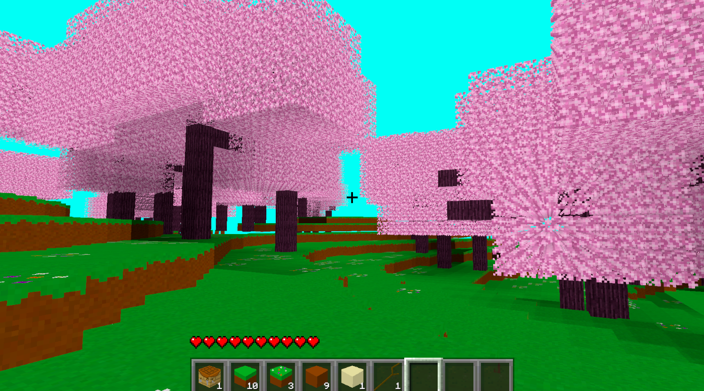
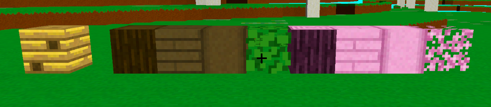
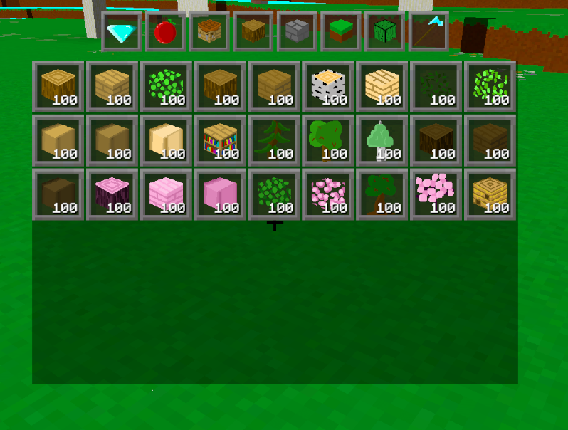
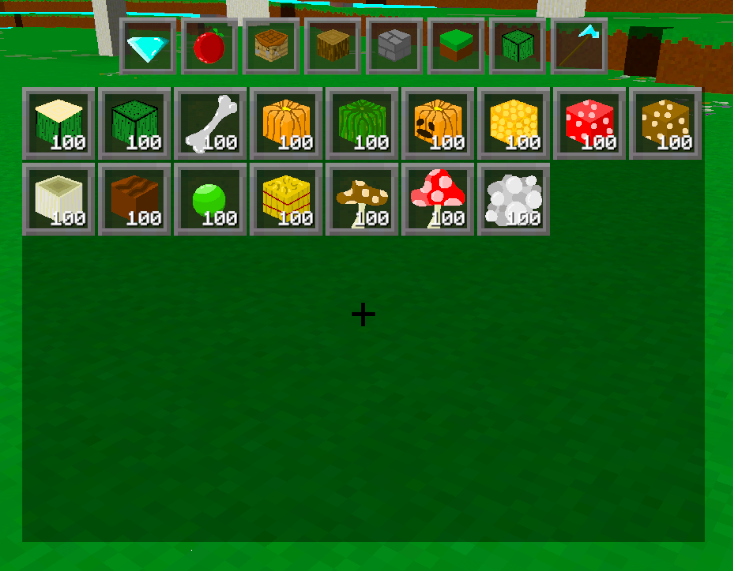

Devlog Seven Overview
Hey, it's been a while. I've been doing stuff, and living my life. Don't worry about it. I took a break, but hopefully I can come back with full force.
I'm still trying to center the devlogs around a certain theme, and that's still true of this one in a sense. Except it's two themes: the world, and enemies. I'm really trying to make the stuff I add into the game, actually in the game. So items can actually be obtained, and the mobs/ enemies can actually spawn and be interacted with. So, this devlog is a good step toward that goal.
Main Features
As you could imagine, one of the main features I added into this devlog update is the new trees I've added. There's two new tree types: Dark Oak and Cherry. I tried to make them look more intersting than just a trunk with some leaves on top. I wouldn't say I'm in love with these new trees, especially the Cherry Tree, but they are certainly different looking and I love that.

The Dark Oak tree is the first 2 x 2 tree in the game, which thankfully wasn't that hard to do. I tried to make the tree look like it had a thick base with roots around the ground. For the cherry tree, I tried to make it have branches coming off the sides with bunches of leaf blocks, making the tree look fluffy. Didn't really give that impression in my opinion. I tried having some air pockets in the leaves, but that made it look too messy, but maybe I'll play more with that in the future. I know for certain I'll come back to the cherry tree in the future, and make it look much better when I get a better idea of how I might do that.
Another main feature of this devlog is that trees and mushrooms can now drop items when you destroy the leaves. It works very similarly to how it does in Minecraft. When destroying a leaf block, there is a random chance of dropping an item, and if one does drop, it'll run through a list of possible items. Possible items that could drop from lets say an Oak Tree Leaf could be a Stick, Oak Sapling, or an Apple. This small upgrade really made the game feel more alive.
Also you can now grow trees and mushrooms using the saplings you can now harvest from them. Unfortunately, there is no model for the saplings, so I won't show it off here. Like I say a lot: that'll be a future thing. Right now, the saplings just look like the leaf blocks. You can grow them all using bonemeal, with each tree/ mushroom having it's own randon chance of being able to grow from each usage of the bonemeal.
This next main feature will involve mobs, so I'll talk about more of the mob details in that section of the page. This part will be more of an overview on the feature side of it. The mob I really want to talk about it the Bee, which is the first mob that can spawn naturally within the world. There is a chance of a Beehive spawning on the side of a Birch Tree, and that Beehive has a chance of spawning some bees. These Bees also have their own cool AI system that allows them to move around the world. Again, more details about that in the mob section of the page. Now that I have wildlife moving about the world, the game feels alive in some way, and not the player moving through a desolate world. This really makes me want to continue adding in more mobs, and continue making the world feel more alive.
Blocks
With the new trees I've added into the game, they came along with their own logs, planks, leaves, and stripped log blocks. I also have the new Beehive block as well.

Items
Now that trees can now drop items, I of course had to add in saplings for each tree type. I've also added in bonemeal to go along with that. So now the player will actually be able to start growing their own trees. Which means the player can start their very first farms in the game.

Similarly to the saplings, the giant mushrooms I have in the game can now drop mushroom saplings as well, which can be used the exact same way as tree saplings, but instead to grow the giant mushrooms. This would then be another farm the player can create.

Oh, and I've also been still adding in some more items related to mobs I'll work on in the future.
Mobs
There has been quite a bit of work towards the mobs in the game. But only with the flying variants. That would for now, just be the Ghast and Bee. And I love bees, so that got an extra amount of love. So much so, that it is currently the first and only mob to naturally spawn in the game.
Bee spawning wasn't that hard to set up. I had to create a Beehive block, and gave that a random chance to spawn on the side of a Birch Tree. Then I had another random number generate between 0 and 4, which would determine the number of bees that spawn at the Beehive. The Bee AI also wasn't that hard to set up either. It helps that they don't have to interact with the ground that much. They basically pick a random point within a set radius around them. If that random move point is in ground or too far from their spawn point/ beehive, then choose a new random move point. Then they just had to rotate and move towards that point. Simple.
Ghasts work similar to bees, except they don't have the restriction of having a beehive/ spawn point. They can just wander wherever they want, off into the distance. The Ghast script will eventually attack the player and what not, but for now, this is fine.
There is still work to be done with these mobs, such as drops, attacking, animations, and more. Like the Ghasts can't naturally spawn yet. But I'm just slowly working on mobs/ enemies when I feel like. There's just always so much work for them.
Conclusion
I made some good progress, but I wish I could've done more. Either way, I'm back, and will hopefully stay back and keep making progress on the game.
I made progress on trees, spawning, and mobs in this devlog. Some good stuff. I'm not sure what I'm going to do for the next update, but we'll see. I know there's gonna be at least some progress on enemies and mobs. So, look forward to reading through that.